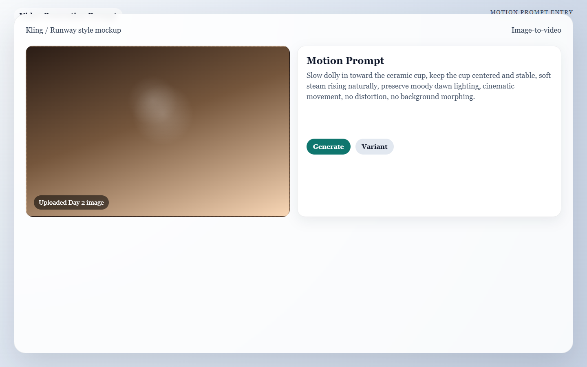

Meta: Page Purpose & Maintenance (For Agents & Instructors)
Purpose: This page teaches Day 3 of the AI Director Course. It exists to help learners add believable camera movement and subject motion without losing the visual quality created on Day 2.
Maintenance Instructions: Update this page when the image-to-video workflow, motion prompt library, or troubleshooting patterns improve. Keep the guidance focused on controllable motion and common failure recovery.
Day 3: Breathing Life
Today's Mission
Create short, believable video clips from your Day 2 keyframes using deliberate motion instructions instead of random animation. By the end of today, you will have a rough, moving sequence of your entire video.
What You Need Before You Start
- Your Approved Keyframes: The 5 perfect static images you generated on Day 2.
- Your Primary Video Generator: (e.g., Kling AI or Minimax for free daily credits, Runway Gen-3 or Luma for pro rendering).
- Storage Space: A folder to save multiple
.mp4clip attempts for each shot.
🏃♂️ The Fast Track
If you are ready to animate, follow these steps to turn your static images into high-quality video clips.
Step 1 — Define the Motion Role
Before uploading an image, decide what the motion is supposed to achieve. Do not just make it move for the sake of moving. Pick one role for each shot: * Reveal: Introduces the subject (e.g., pan left). * Emphasis: Draws attention to a detail (e.g., slow push-in). * Hold: Keeps the camera locked while preserving atmosphere (e.g., steam rising).
Step 2 — Separate Camera vs. Subject Motion
Treat these as two completely different systems in your prompt. * Camera Motion: Pan, tilt, dolly, push-in, orbit. * Subject Motion: Hand movement, steam rising, liquid pouring, fabric shifting.
The Golden Rule of AI Motion
Start with one dominant camera move and minimal subject motion. If you ask for too much at once, the AI will hallucinate and distort your image.
Step 3 — The Motion Prompt Template
When uploading your Day 2 image into your video generator, use this structure to tell the AI exactly how to animate it:
The Motion Prompt Formula: >
[Primary Camera Motion],[Secondary Subject Motion], keep[Subject]stable, preserve[Identity Details], natural cinematic movement, no distortion, no warping.
Example for our Shot 4 (The Espresso Cup): > Slow dolly in toward the ceramic cup, keep the cup centered and stable, soft steam rising naturally, preserve moody dawn lighting, cinematic movement, no distortion, no background morphing.

Caption: A Day 3 motion setup where the still image is uploaded first and the camera-movement prompt is entered before rendering short clip variants.
Step 4 — Generate & Keep Clips Short
Generate the clip. If your tool allows you to set the duration, choose 5 seconds (or the shortest option). Shorter clips are much easier for the AI to keep stable.
Step 5 — Approve Only Edit-Ready Clips
Generate 3 to 4 variations of motion for the same shot. Keep only the clips that: * Preserve the visual quality of your Day 2 frame. * Support the storyboard action. * Do not have melting faces or warped backgrounds.
🧠 The Deep Dive
Expand these sections to understand the physics of AI video generation and how to save a clip that keeps breaking.
Think in Physics, not just Aesthetics
The best motion prompts respect what should logically move in the real world. * Steam can drift and curl. * A camera can push in slowly. * A heavy metal product should not wobble like rubber. If your text prompt violates the material logic of the scene, the AI will try to bend reality to accommodate you, and the output will look fake.
The Camera Movement Library
Use these specific terms in your prompts to control the "virtual camera": * Push-in / Dolly-in: Adds focus and importance to a subject. * Pull-back: Creates context or a feeling of calm. * Pan: Reveals width or guides the eye left/right. * Locked shot with secondary motion: The safest option when the frame is already beautiful. (e.g., "Static camera, dust motes floating"). * Warning: Avoid "Orbit" moves unless absolutely necessary. They look impressive but frequently cause the subject's geometry to drift.
Troubleshooting: The product changes shape or melts
Reduce the amount of subject motion in your prompt and use a simpler, slower camera move. If the product still melts, you may need to pick a cleaner Day 2 frame that has simpler lighting reflections.
Troubleshooting: The clip starts great but breaks at the end
This is the most common AI video artifact. The AI "forgets" the physics by second 4 or 5. Save the clip anyway! We will trim off the broken ending during Day 6 (Editing). As long as you have 2 solid seconds of usable footage, the clip is a success.
Troubleshooting: Every shot feels too static or boring
Add one small element of secondary motion instead of forcing a massive camera move. Prompting for "soft steam," "light flicker," "dust motes," or "leaves blowing" adds incredible life to a locked camera shot.
✅ Day 3 Checkpoint
Before moving on, confirm that your generated clips:
- [ ] Preserve the identity of the subject from your Day 2 images.
- [ ] Fit their storyboard role without moving too chaotically.
- [ ] Have at least 2 to 3 seconds of usable, un-warped footage.
Tomorrow: Day 4 is all about the spoken word—adding voiceovers and dialogue (only if your project actually needs it).